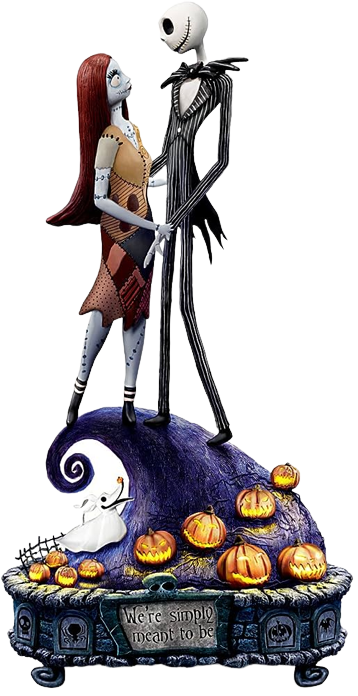
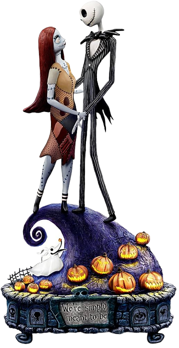
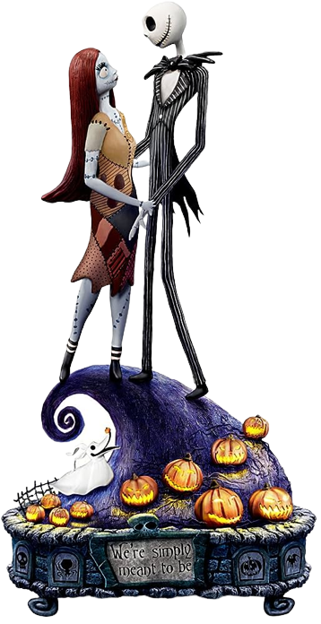
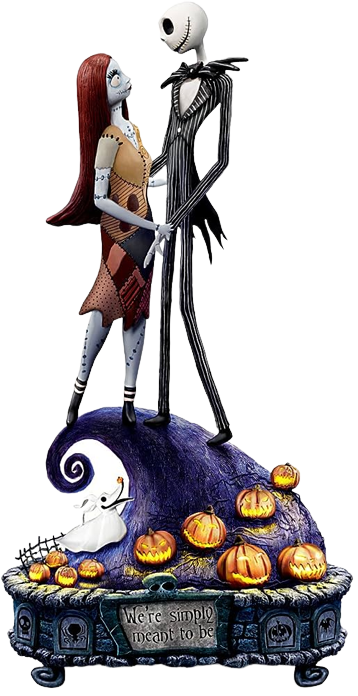

O Estranho Mundo de Jack


 



Desde sua estreia em 1993, "O Estranho Mundo de Jack" (The Nightmare Before Christmas) cativou o coração de milhões de espectadores ao redor do mundo. Criado pelo mestre da animação stop-motion, Tim Burton, e dirigido por Henry Selick, o filme é uma obra-prima que combina elementos de conto de fadas, horror e musical, criando um mundo único e encantadoramente macabro.
A história gira em torno de Jack Skellington, o Rei das Abóboras na cidade fictícia de Halloween Town. Apesar de ser adorado por seus habitantes por criar assustadoras celebrações de Halloween a cada ano, Jack começa a se sentir entediado e vazio com a rotina que sua vida se tornou. Em uma noite de reflexão, ele acidentalmente descobre a Christmas Town, uma cidade cheia de alegria e magia natalina. Fascinado por esse novo mundo, Jack decide tomar para si o papel do "Papai Noel" e trazer o espírito do Natal para Halloween Town. No entanto, sua compreensão distorcida do Natal leva a resultados hilariantes e, por vezes, caóticos.
O filme é um verdadeiro deleite visual, com sua estética única de stop-motion e um design de produção que combina elementos sombrios com um toque de fantasia. A trilha sonora inesquecível, composta por Danny Elfman, dá vida às emoções dos personagens, desde as canções energéticas como "This Is Halloween" até as baladas melancólicas como "Jack's Lament". Cada música se encaixa perfeitamente na narrativa, aprofundando os sentimentos dos personagens e a atmosfera da história.